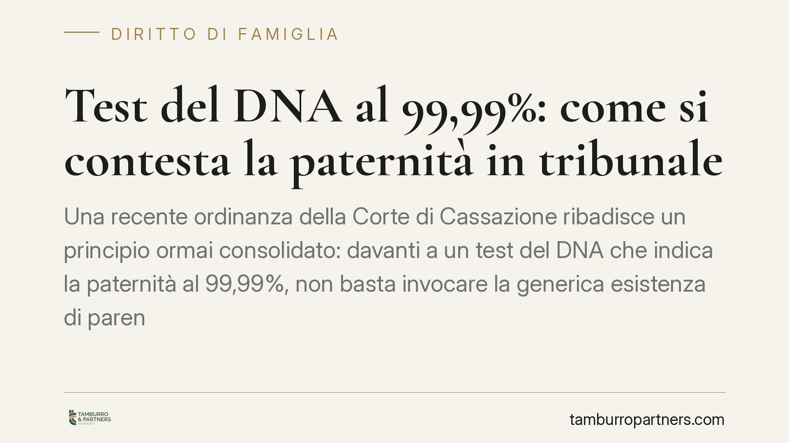

Test del DNA al 99,99%: come si contesta la paternità in tribunale
Una recente ordinanza della Corte di Cassazione ribadisce un principio ormai consolidato: davanti a un test del DNA che indica la paternità al 99,99%, non basta invocare la generica esistenza di parenti maschi consanguinei per metterlo in discussione. Chi contesta deve indicare un'ipotesi alternativa concreta e con un nome. Vediamo perché e cosa comporta.

Il principio affermato
Nei giudizi di accertamento della paternità, la consulenza tecnica genetica (il cosiddetto test del DNA) rappresenta lo strumento probatorio centrale. Quando l'esame indica una compatibilità pari o superiore al 99,99%, la giurisprudenza lo considera un elemento di prova di altissimo valore, idoneo da solo a fondare l'accertamento del rapporto di filiazione.
Attenzione, però, a un punto tecnico spesso frainteso: il dato genetico non è una "prova legale" tipizzata, cioè vincolante per legge a priori. Resta un elemento valutato dal giudice secondo il principio del libero convincimento. In concreto, tuttavia, la sua affidabilità scientifica è tale che per superarlo occorre molto di più di un'eccezione generica.
L'inquadramento normativo
In materia di filiazione, l'articolo 269 del Codice civile stabilisce che la prova della paternità e della maternità può essere data con ogni mezzo. È la cornice che consente al giudice di valorizzare pienamente l'esame del DNA.
Sul piano dell'onere della prova vale l'articolo 2697 del Codice civile: chi afferma un fatto a fondamento della propria domanda deve provarlo. Una volta che la consulenza genetica ha acquisito un risultato al 99,99%, l'onere si sposta sostanzialmente su chi intende contestare quel risultato. Non spetta più a chi agisce dimostrare oltre ogni dubbio la paternità: spetta a chi resiste fornire elementi idonei a incrinare la conclusione scientifica.
Rileva infine l'articolo 116 del Codice di procedura civile, che consente al giudice di trarre argomenti di prova dal contegno delle parti nel processo. In questo ambito, il rifiuto ingiustificato di sottoporsi al prelievo biologico viene valutato come comportamento significativo e può concorrere, insieme agli altri elementi, a fondare l'accertamento della paternità.
Perché l'alternativa deve essere concreta e nominale
Il cuore della pronuncia riguarda il tipo di contestazione ammissibile. Non è sufficiente obiettare che esistono, in astratto, parenti maschi consanguinei (un fratello, un padre, un cugino) che potrebbero condividere un patrimonio genetico simile.
Un'eccezione di questo tipo è troppo vaga per scalfire un risultato del 99,99%. Per mettere in discussione la consulenza, chi contesta deve indicare un'ipotesi alternativa precisa: un soggetto determinato, identificabile, che avrebbe potuto essere il padre, insieme agli elementi di fatto che rendono quella ipotesi plausibile.
In mancanza, il dubbio resta sul piano meramente teorico e non incide sulla valutazione del giudice. La ragione è coerente: un margine statistico residuo dello 0,01% non si trasforma in prova contraria solo perché, biologicamente, qualcun altro potrebbe condividere parte del DNA. Occorre un'alternativa verificabile.
Implicazioni pratiche
Per chi promuove un'azione di accertamento della paternità, la consulenza genetica rimane la strada maestra e, se condotta correttamente, difficilmente superabile.
Per chi si difende, invece, la pronuncia restringe lo spazio delle contestazioni puramente dilatorie. Rifiutare il prelievo o limitarsi a eccezioni generiche non è una strategia neutra: può ritorcersi contro, trasformandosi in argomento di prova a sostegno della domanda avversaria.
Cosa fare in concreto
- Valutate con un legale la consulenza genetica prima di impostare la linea difensiva: la percentuale di compatibilità incide direttamente sulle strategie possibili.
- Non rifiutate il prelievo biologico senza una ragione solida: il rifiuto ingiustificato può essere letto dal giudice come argomento di prova contrario.
- Se intendete contestare il risultato, individuate un'ipotesi alternativa precisa: un soggetto determinato e gli elementi di fatto che la rendono credibile.
- Raccogliete documentazione a supporto (relazioni, testimonianze, dati biologici) in tempo utile per il contraddittorio tecnico sulla CTU.
- Verificate i termini e i presupposti dell'azione: in materia di filiazione le regole processuali e sostanziali richiedono un'impostazione rigorosa fin dall'inizio.
La combinazione tra affidabilità scientifica del test e corretta distribuzione dell'onere della prova rende oggi l'accertamento della paternità un ambito in cui l'approssimazione difensiva paga un prezzo alto.
---
Contributo informativo a cura di Tamburro & Partners Avvocati – Avv. Giuseppe Tamburro. Non costituisce parere legale.
Ogni famiglia ha il suo equilibrio.
Separazione, divorzio, affidamento, assegno: se vuoi un confronto riservato su una specifica situazione, scrivi allo studio. Ti rispondiamo entro un giorno lavorativo.